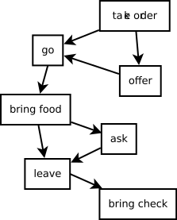
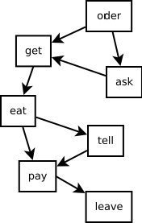

Recently, people have been working on making programs that are able able to extract general commonsense knowledge from text. For example, this paper learns about restaurants from blog posts. These programs are often evaluated on a task very similar to the one you just performed.
We want to know how people perform on tasks like this. Do they tend to agree with one another? Do their guesses tend to match the original text? For which stories do the computer programs give similar answers to people? When do they give different answers?
If you have questions about this research, please contact Erin Bennett at erindb@stanford.edu or Noah Goodman, at ngoodman@stanford.edu.
Here are some examples of restaurant scripts (for waiters and customers) that these models might be able to learn:
